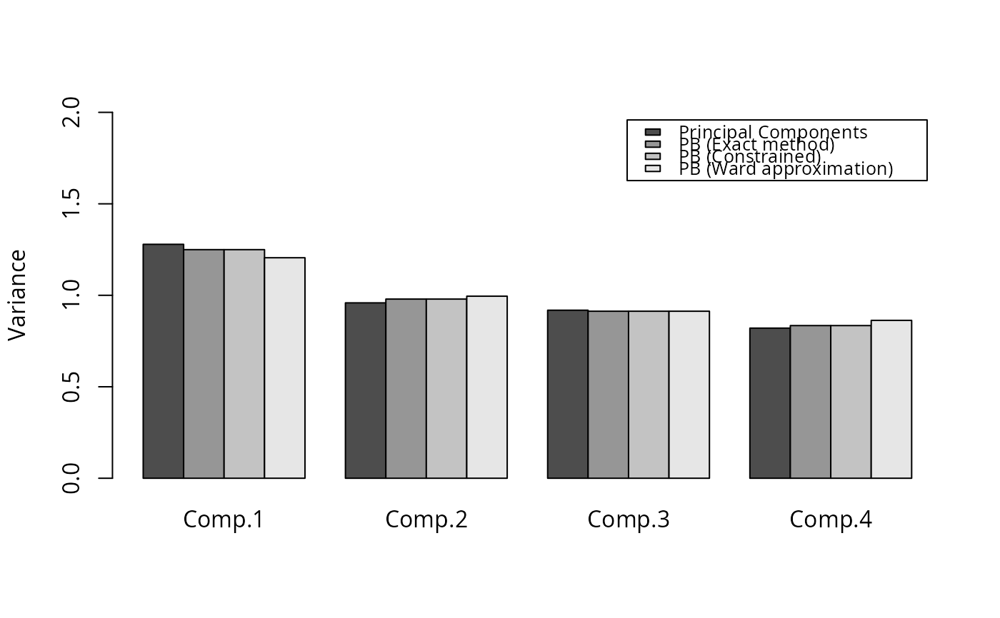

Construct a basis of principal balances for a compositional data set.
Usage
pb_basis(
X,
method,
constrained.criterion = "variance",
cluster.method = "ward.D2",
ordering = TRUE,
...
)Arguments
- X
Compositional data set.
- method
Method used to construct the principal balances. One of `"exact"`, `"exact2"`, `"constrained"`, or `"cluster"`.
- constrained.criterion
Criterion used by the constrained method. Either `"variance"` (default) or `"angle"`.
- cluster.method
Linkage criterion passed to
hclustwhen `method = "cluster"`.- ordering
Logical; if `TRUE`, reorder balances by decreasing explained variance.
- ...
Additional arguments passed to
hclust.
Details
Several methods are available:
`"exact"`: exact computation of principal balances,
`"exact2"`: exact computation using incremental Gray-code updates,
`"constrained"`: constrained approximation based on a target criterion,
`"cluster"`: approximation based on hierarchical clustering.
References
Martín-Fernández, J. A., Pawlowsky-Glahn, V., Egozcue, J. J., & Tolosana-Delgado, R. (2018). Advances in Principal Balances for Compositional Data. Mathematical Geosciences, 50, 273–298.
Examples
set.seed(1)
X <- matrix(exp(rnorm(5 * 100)), nrow = 100, ncol = 5)
v1 <- apply(coordinates(X, "pc"), 2, var)
v2 <- apply(coordinates(X, pb_basis(X, method = "exact")), 2, var)
v3 <- apply(coordinates(X, pb_basis(X, method = "constrained")), 2, var)
v4 <- apply(coordinates(X, pb_basis(X, method = "cluster")), 2, var)
barplot(
rbind(v1, v2, v3, v4),
beside = TRUE,
ylim = c(0, 2),
legend = c(
"Principal Components",
"PB (Exact method)",
"PB (Constrained)",
"PB (Ward approximation)"
),
names = paste0("Comp.", 1:4),
args.legend = list(cex = 0.8),
ylab = "Variance"
)
